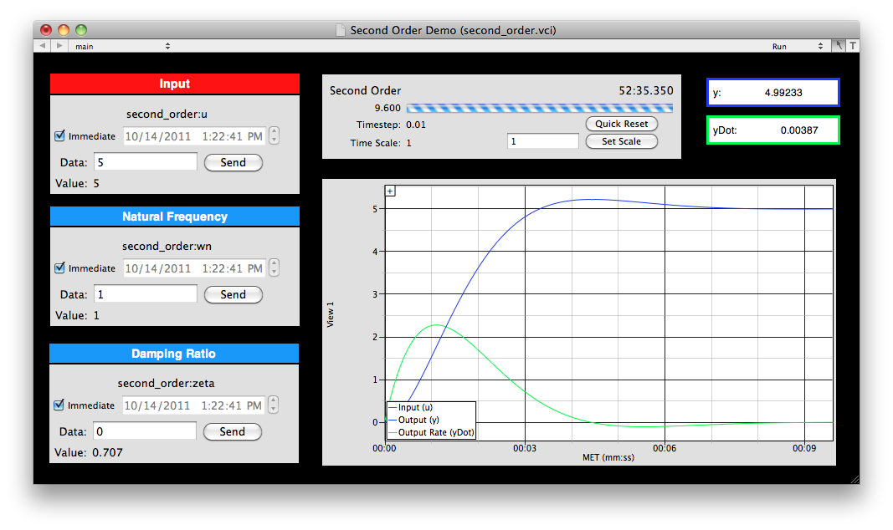
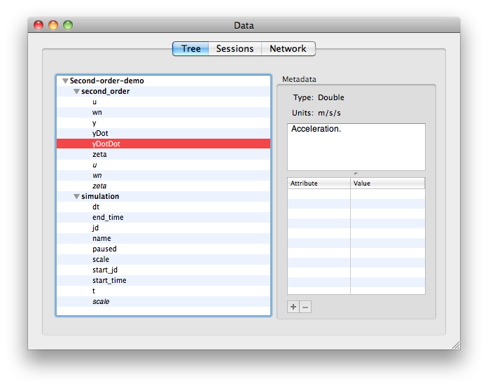

This built-in demo runs a simulation of a simple 2nd order system. It includes an interface file and a DSim setup file. The purpose of this demo is to provide a basic example of how DSim can be used to simulate dynamic systems, and how to interact with simulations in VisualCommander.
The model is a standard single-input, single-output (SISO) 2nd order response. The transfer function from control input U(s) to output Y(s) has the form:
We can also express the time response y(t) by writing the second derivative as follows:
The system has a unit steady-state response. In other words, when the time response stops changing, the time derivatives are zero, and the output y(t) is equal to the input.
The interface file is named "second_order.vci". It has a single page with command plugins to control the input, natural frequency, and damping ratio. It prints out the value of these commands, as well as the output and output rate, and shows a 2D plot that includes both the input and output signals. A sample screenshot is shown below.
The box in the top middle is a "Session Manager" plugin. Use it to track the timing of the simulation. It shows the current simulation time and indicates the percentage complete with a horizontal bar plot. If you want configure the session properties, such as the session name and whether the simulation should start upon initialization, open the inspector for the interface.
To use the interface, first enter a value for "u" in the red command plugin and hit "Send". You will see the value in the red data display box change to your commanded value, and the red line in the plot will jump to the same value. The blue line ("y") will follow the red line according to the second order dynamics, while the changing value of "y" is displayed in the blue data display box.
Try changing the natural frequency and damping ratio and then command new values for "u" to see how the nature of the time response changes.
Note that the default timestep for this simulation is 0.01 seconds. VisualCommander will nominally update the displays with every new data point, which can bog down the graphics for very rapid simulations. The update interval is a property of every display plugin, like the border and background color. This interface overrides the update interval for both displays to be 0.1 seconds. Each of these displays also has configuration settings. Right-click on the displays in Edit mode to access the different settings available.
The setup file for the second order demo is very simple. The entire file is shown below:
<Simulation>
<version>1</version>
<timeStep>0.01</timeStep>
<startSeconds>0</startSeconds>
<startJD>2455623.953075618</startJD>
<timeScale>1</timeScale>
<name>Second Order Dynamic Simulation</name>
<integrator>
<name>RK4</name>
<type>DSimRK4</type>
<library>builtin</library>
</integrator>
<objectTree>
<object>
<name>second_order</name>
<type>DSimSecondOrder</type>
<library>builtin</library>
<integrator>RK4</integrator>
<logVariable>yDotDot</logVariable>
<logVariable>yDot</logVariable>
<logVariable>y</logVariable>
</object>
</objectTree>
</Simulation>
The first section defines the base simulation parameters. Here, we use a time step of 0.01 seconds, a time scale of 1.0 (synced with real-time) and start time of 0 seconds. The simulation runs indefinitely. The simulation uses the built-in fourth order Runga Kutta integrator.
In this simulation, we have only one object in the tree. We name it "second_order". It is an object of the "DSimSecondOrder" class. It is not included in any separate bundle, but is one of the "builtin" classes that is provided with DSim.
For more information about the building and customizing a simulation from DSim components, see the DSimManager help documentation.
DSim produces a hierarchical data tree from the simulation. The Data window with the tree opened is shown below.
Note that there is one entry for the simulation data such as the time step, and another entry for the simulation objects. In this case there is only the second order objects. Note that you can drag any of the data points from either level onto the interface to view or plot them, and the italicized data points are commands. The metadata displayed on the right is supplied by the object class.